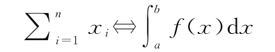

.2 进入荒野.2 进入荒野.2.1 为类比建立词典
.2 进入荒野.2 进入荒野.2.1 为类比建立词典既然决定严肃对待机器与向量的类比，我们就建立一个词典，让这个类比更加精确。这样我们就能更方便地在关于向量的语句和关于机器的语句之间来回转换，并帮助我们搞清楚在这个无穷维的新世界怎么做微积分。下面的方框就是我们的词典，其中每个“定义”由两行组成。第一行的一对是用词语描述的向量／机器类比的特定部分的描述，第二行则是用符号表述相同的东西。符号“⇔”表示“在向量／机器的类比中左边和右边的东西是一对”。这个词典并不完整，在这一章后面部分我们会看到更多统一机器和向量的途径。不过，这个词典完整描述了我们到目前为止的思想，即机器和向量可以视为更广义的概念的两个特例。准备，词典！
词典说明
（用词语描述的）关于向量的事情⇔（用词语描述的）关于机器的事情
（用符号描述的）关于向量的事情⇔（用符号描述的）关于机器的事情
词典
向量⇔机器
x⇔f
向量的索引⇔机器的输入
i⇔x
向量在某个索引处的成分⇔机器在某个输入下的输出
xi⇔f（x）
吃向量的机器⇔吃机器的机器
F（x）⇔F［f（x）］
求和⇔积分
